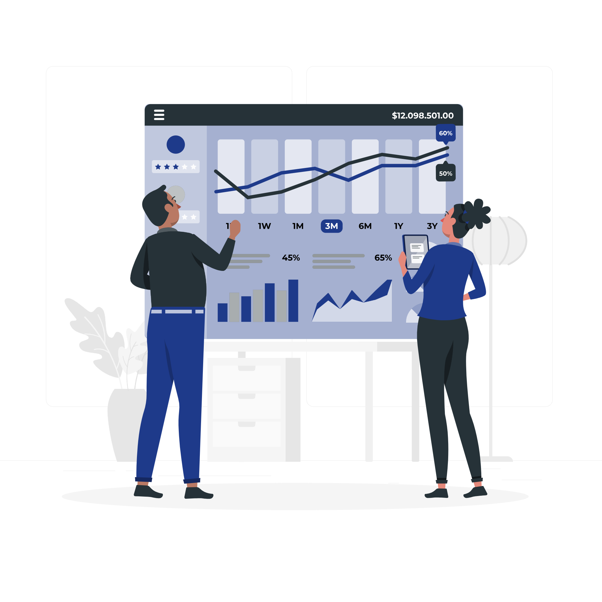

Conectamos universidades e gestores por meio de tecnologia e análise de dados, facilitando decisões estratégicas que elevam a qualidade acadêmica e a eficiência administrativa.
Cadastre-se
A Conexão Acadêmica surgiu com o propósito de simplificar a gestão educacional. Acreditamos que dados, quando bem interpretados, são a ferramenta mais poderosa para elevar o padrão acadêmico.
Algoritmos avançados para prever tendências.
Painéis dinâmicos para decisões inteligentes.
Tecnologia estratégica para transformar gestão acadêmica.
Transforme dados acadêmicos em clareza estratégica.
Centralize indicadores, acompanhe métricas em tempo real e tenha uma visão completa do desempenho institucional em um único painel. Decisões mais rápidas começam com informação organizada e acessível.
Saiba MaisInsights que revelam oportunidades invisíveis.
Vá além dos números básicos. Nossa plataforma identifica padrões, tendências e pontos críticos que impactam o desempenho dos alunos e da instituição, permitindo ações precisas e fundamentadas.
Saiba MaisAntecipe cenários. Planeje com confiança.

Utilize modelos analíticos para projetar resultados acadêmicos, reduzir riscos e melhorar indicadores estratégicos. A previsão inteligente transforma incertezas em planejamento seguro.
Saiba MaisDecisões baseadas em evidência, não em suposições.
Integre dados pedagógicos, administrativos e institucionais em uma única estratégia de crescimento. Otimize recursos, aumente eficiência e fortaleça a performance educacional.
Saiba Mais